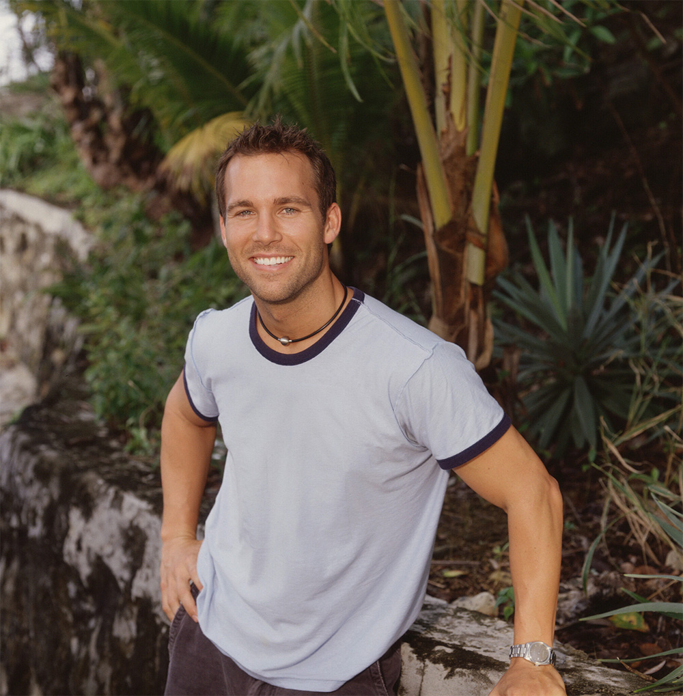
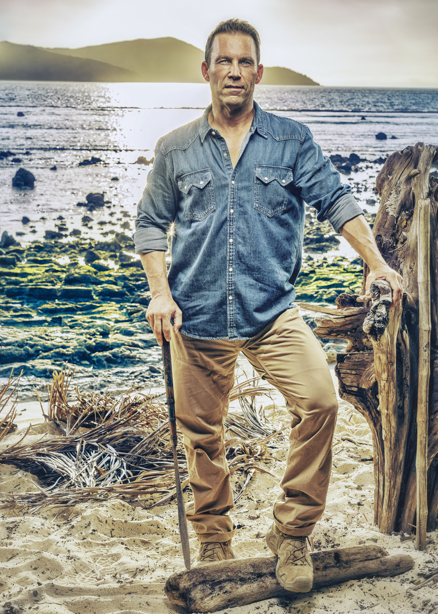

Colby Donaldson


Episode 1
Colby immediately reconnected with Stephenie LaGrossa from Heroes vs. Villains. They formed the core of Vatu's majority alliance with Kyle and Genevieve, then pulled in Q. On Day 4 he lost a stacking challenge to Savannah, costing him his vote. Unlike Q, Colby was completely transparent about losing his vote. He also developed an unexpected mentor relationship with Rizo, taking him "under his wing."
Disadvantages
- Lost Vote — Lost to Savannah in a Journey challenge. Cannot vote at next Tribal Council.
Alliances
Figurehead of the majority alliance with Stephenie, Genevieve, and Q. But the alliance is crippled: his own vote gone, Q's vote gone, Kyle medevacked. Only Stephenie and Genevieve have active votes from the majority. His bond with Rizo could be key to survival.
About
Colby Donaldson is an early Survivor icon. He was just 26 years old when he competed on The Australian Outback (Season 2), where he became a fan favorite and finalist. He returned for All-Stars (Season 8) and Heroes vs. Villains (Season 20), where he finished 5th as the last "hero" standing. Now 51, he hasn't played in over a decade. He admitted he almost dropped out of Season 50 but described his fourth time on the show as the "most fun."